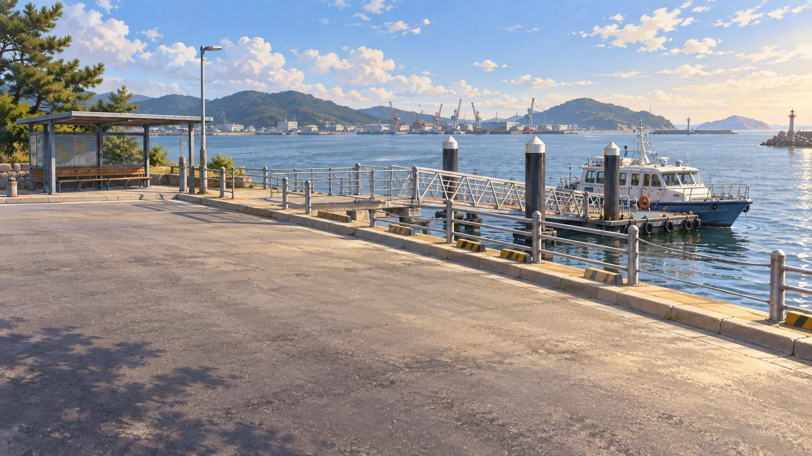
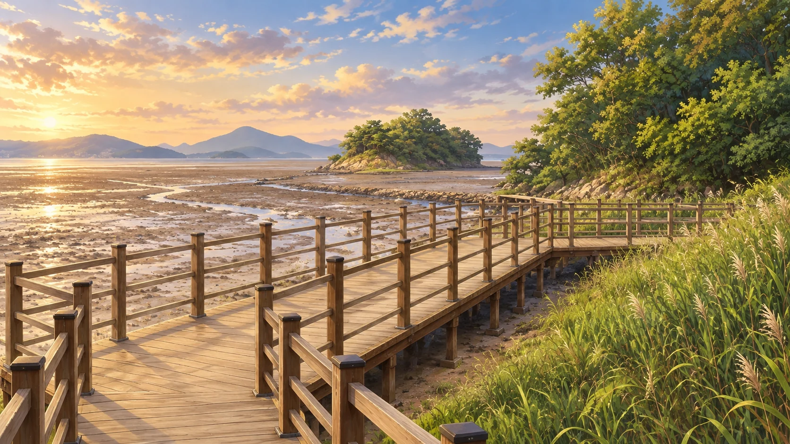
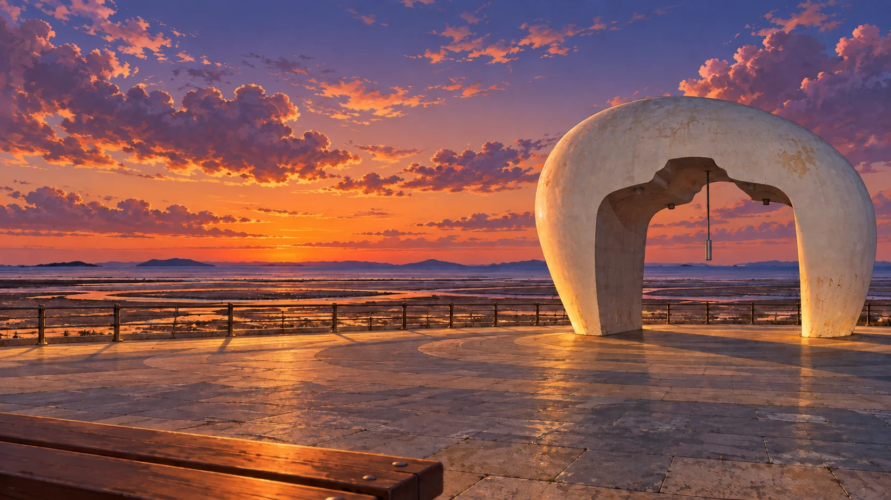
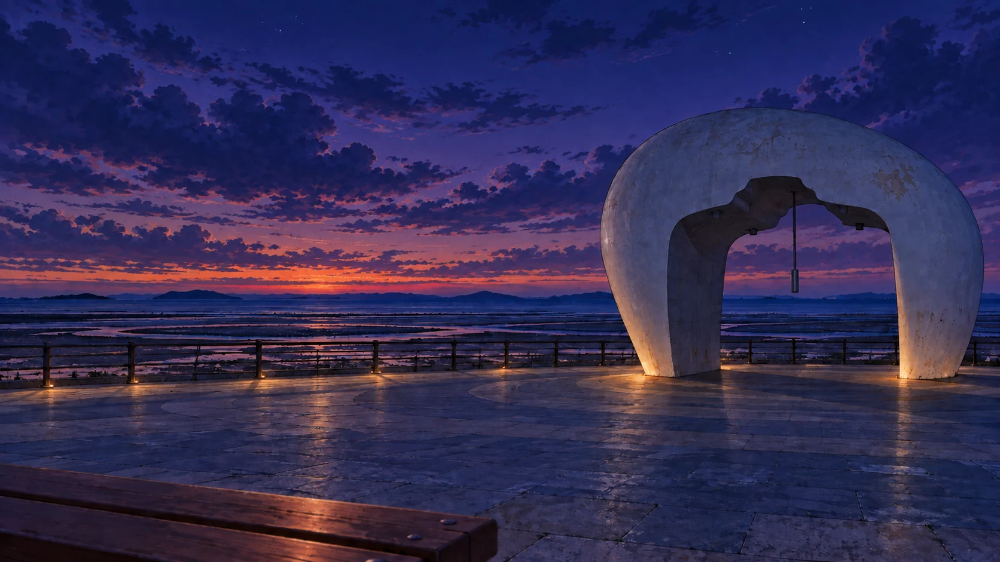
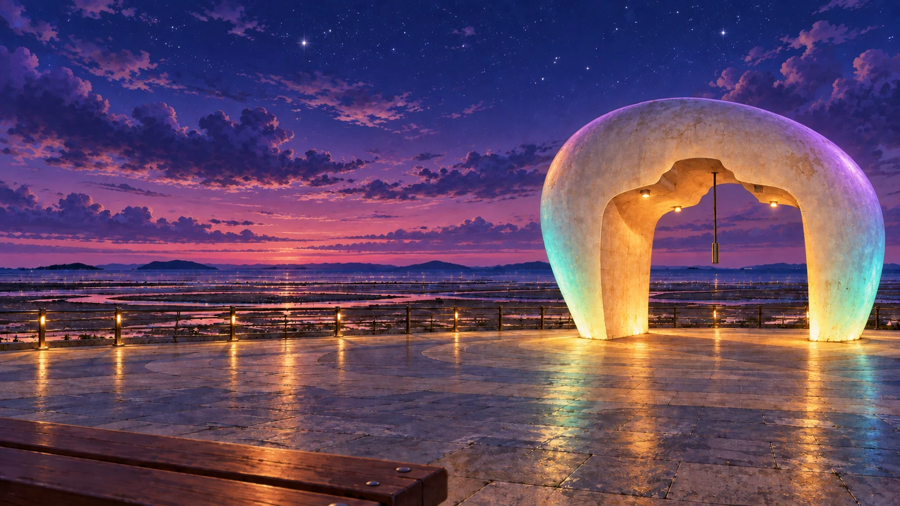
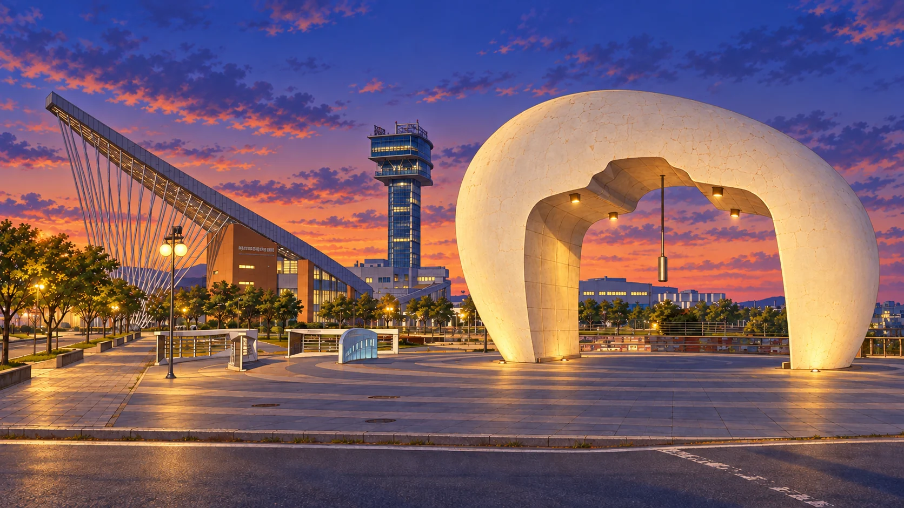

CHAPTER 02 · 서해·검단이번 정류장은
세어도로 가는 선착장입니다.
바닷길을 따라 섬으로,
노을빛을 따라 정서진으로.
이동 장면은 창작 일러스트입니다.
박물관의 빛부터 찾아 주세요.
챕터 1 검단선사박물관을 완료하면
세어도와 정서진으로 여행을 떠날 수 있어요.
지역 월드맵으로 →

✦
실제 장소를 참고한 창작 일러스트
 창작 여행 동선 · 실제 승선 장소와 운항 일정은 방문 전 확인해요.
창작 여행 동선 · 실제 승선 장소와 운항 일정은 방문 전 확인해요.

세어도 · 선착장으로 돌아가는 길인천 세어도 선착장 →길을 안내하는 빛을 찾았어요.



입력한 시각에 따라 변하는 노을
내가 입력한 최종 시각분과 초를 맞추며 그 시각의 풍경을 살펴봐요.
✦ 정서진의 노을빛을 찾았어요!
별빛과 노을종의 빛이 수첩으로 모여요.

LIGHT FOUND · 두 번째 빛길과 시간을 이어,
노을빛을 간직하다.
민우와 서연은 수학의 빛을 담고
육지의 버스에 다시 올랐어요.
CHAPTER 02 COMPLETE바닷길 끝에서 찾은
수학의 빛
팻말 조각의 위치를 옮겨 길을 찾고,
분과 초를 바꾸며 저녁의 시각을 기록했어요.
오후 6시 45분 20초 ＋ 2분 50초
＝ 오후 6시 48분 10초
세어도의 길을 잇는 빛정서진의 노을빛
다음 챕터 · 청라루와 음악분수에서 호수의 밤을 밝혀요.
저장할 수 없어 이 창에서만 진행됩니다.